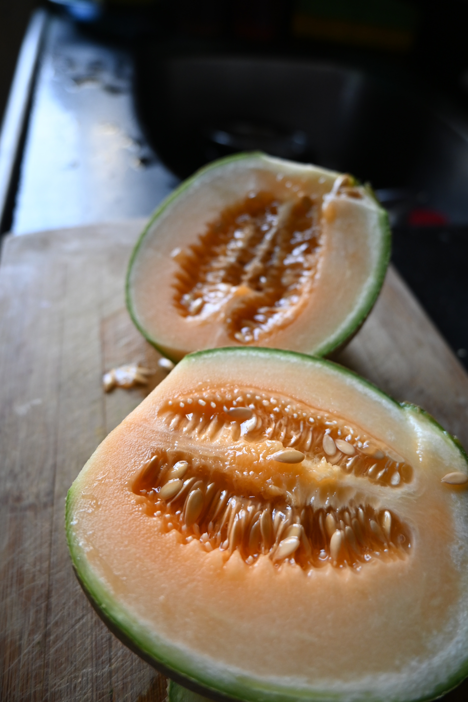

About Muskmelons
Muskmelons, also known as cantaloupes, are sweet and refreshing fruits with a distinct aroma and flavor. They are a rich source of vitamins and antioxidants and are enjoyed in their natural form or as a part of various dishes and desserts.
Steps to Grow Muskmelons
- Choose a sunny location with well-drained, fertile soil for muskmelon cultivation.
- Plant muskmelon seeds or seedlings in the spring, ensuring proper spacing between plants.
- Water the plants regularly, keeping the soil consistently moist, especially during dry periods.
- Fertilize muskmelon plants with a balanced fertilizer to support growth and fruit production.
- Protect the plants from pests and diseases through regular monitoring and treatment.
- Harvest muskmelons when they are fully ripe and have a sweet fragrance, typically in the summer.
Extra Information
Muskmelons are a delicious and hydrating fruit, perfect for hot summer days. They are known for their high water content and are a great source of vitamin C. Muskmelons are a favorite addition to fruit salads and smoothies.